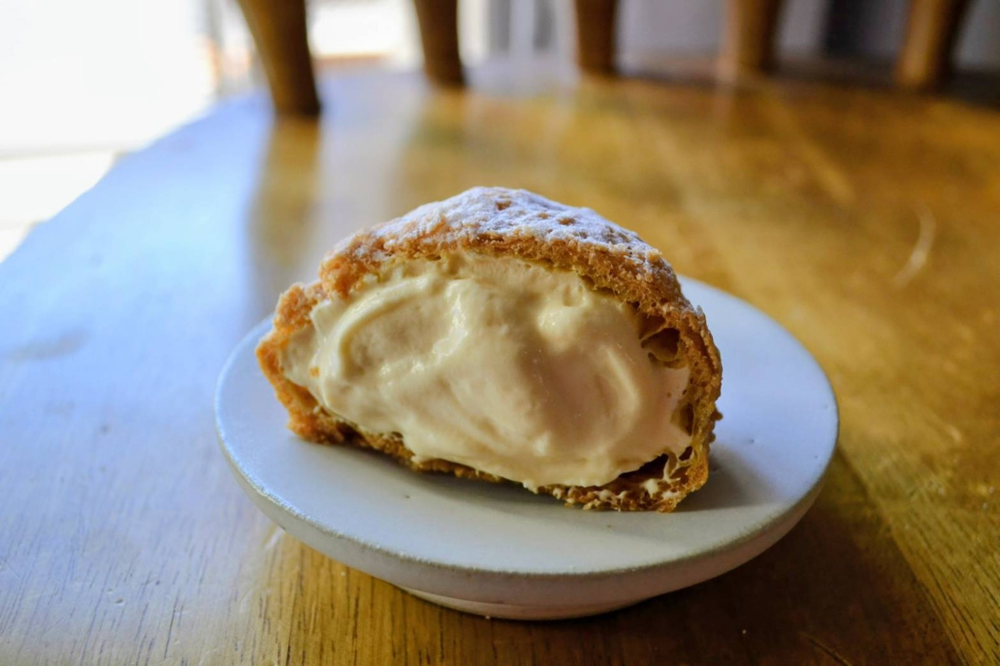
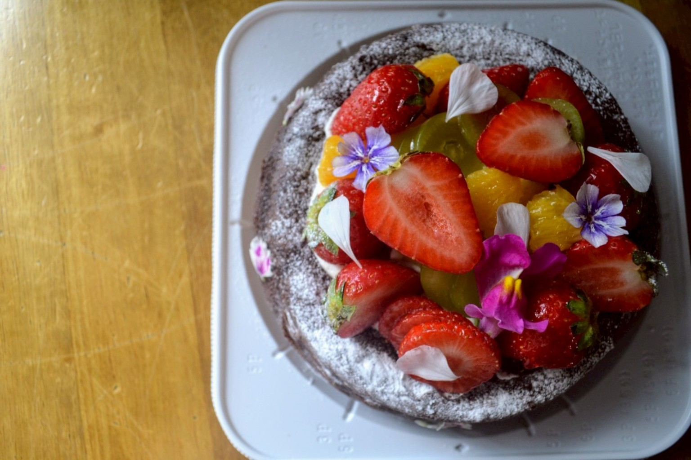
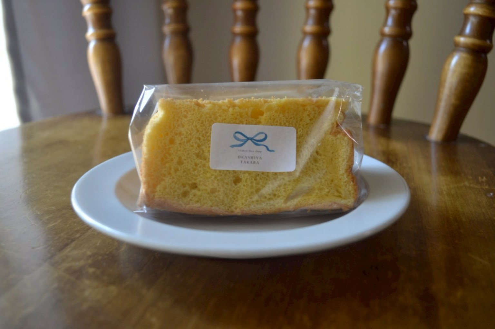
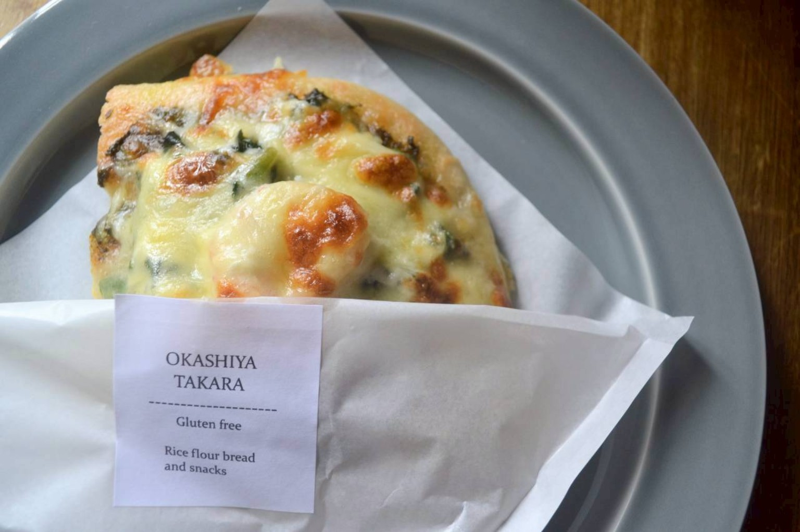
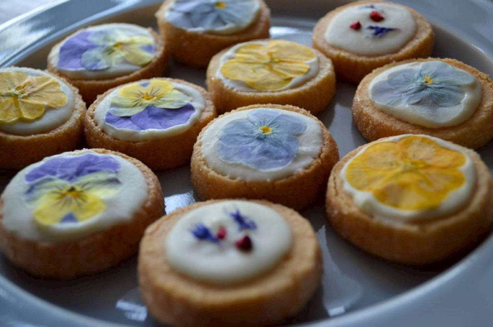
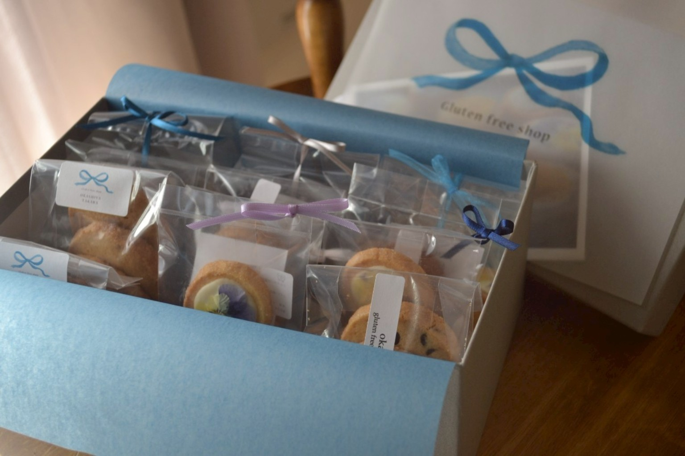
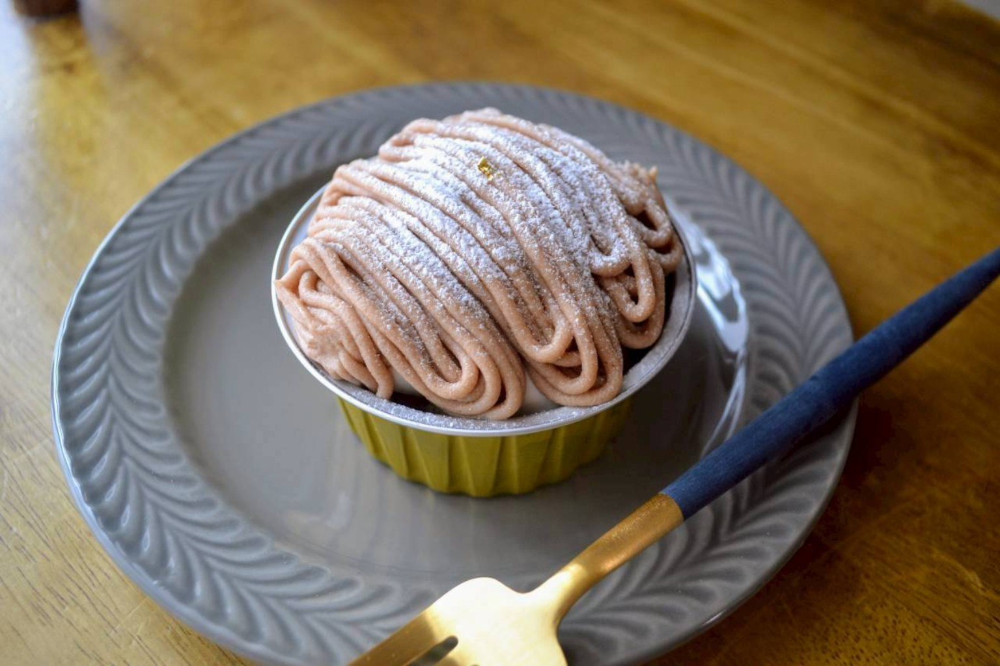
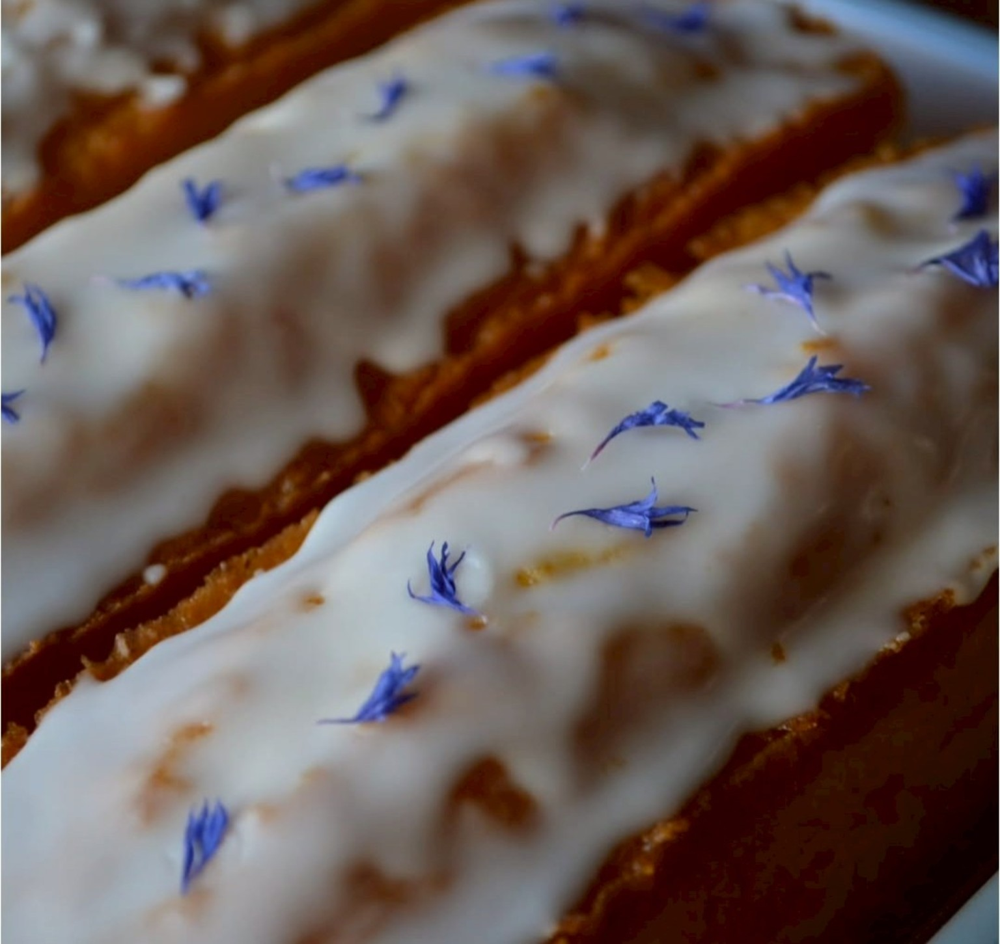
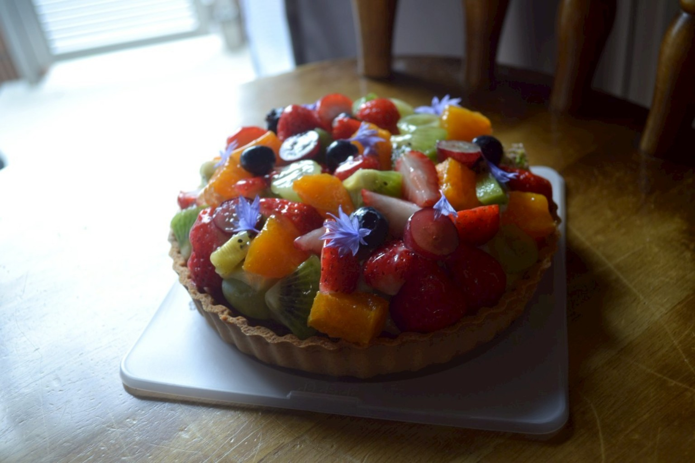

米粉のおやつ
クリームたっぷりのクッキーシューなど、毎日のおやつに。

01 — CONCEPT
TAKARAは、米粉100%のグルテンフリーのパンとおやつのお店です。
ふわっと、さくっと、なめらかに。米粉ならではの食感を生かしながら、素材と手仕事を大切に、一つひとつ丁寧にお作りしています。
※商品によって卵・乳製品などを使用しています。アレルギーについては店頭でお尋ねください。

02 — OUR PRODUCTS
その日のラインナップや季節商品は
Instagramでお知らせしています。
クリームたっぷりのクッキーシューなど、毎日のおやつに。

米粉ならではの軽やかな口どけを楽しめるシフォン。

甘いものだけでなく、食事にうれしい米粉パンも。

旬の素材を使った、季節ごとのお楽しみ。




ONLINE SHOP
オンラインでご購入いただける商品はBASEショップでご案内しています。商品の在庫・販売状況はBASEで最新情報をご確認ください。
BASE ONLINE SHOP ↗04 — SHOP INFO
東武練馬駅から歩いて、
今日のおやつを探しに。
営業日・営業時間、当日の商品情報はInstagramで最新情報をご確認ください。